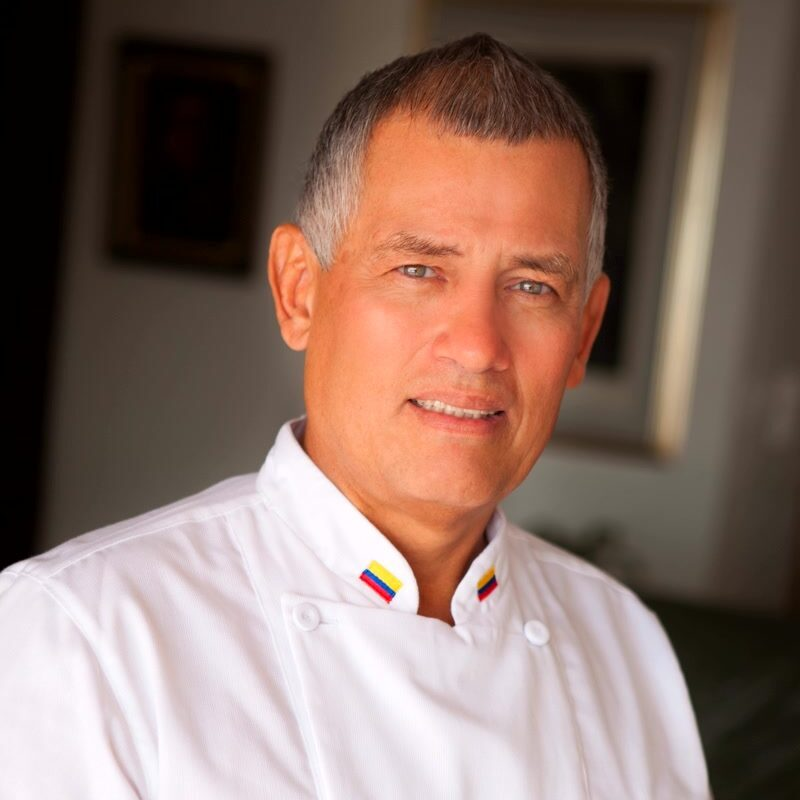
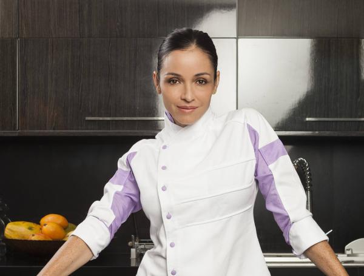

"¿Sabías que la gastronomía no es solo comida, sino el motor cultural y económico más dinámico de nuestra región? Sin embargo, falta un espacio que conecte la técnica, la cultura, la nutrición y la historia en un solo ecosistema digital profesional. Bienvenidos a Sabor 360."
"Queremos ser el medio multiplataforma (Instagram, TikTok, YouTube, Facebook) diseñado para ser el referente absoluto de la industria. No solo hablamos de comida; somos una central de contenidos con equipo técnico de alto nivel —cámaras, editores, sonidistas— puestos al servicio de la narrativa gastronómica."
"Somos una comunidad con referentes como el Chef Carlos Yanguas en nuestro podcast semanal, la chef Catalina Vélez, la nutricionista Camila Duque entre otros. Nuestra agenda es total: desde el pulso de las noticias diarias y lanzamientos, eventos, hasta la profundidad de la cultura gastronómica, el mundo del Sommelier, el barista y el turismo gastronómico."
Sabor360 es una marca de Televicentro del Valle SAS, empresa de multimedia con más de 40 años en la industria audiovisual colombiana.

Pionero de la Gastronomía Regenerativa en el Valle del Cauca con más de 15 años en la alta cocina colombiana.
Especialista en nutrición funcional y gastronomía saludable, conectando ciencia y experiencia culinaria.

Referente de la cocina colombiana moderna, con presencia constante en nuestro podcast y contenido en redes.